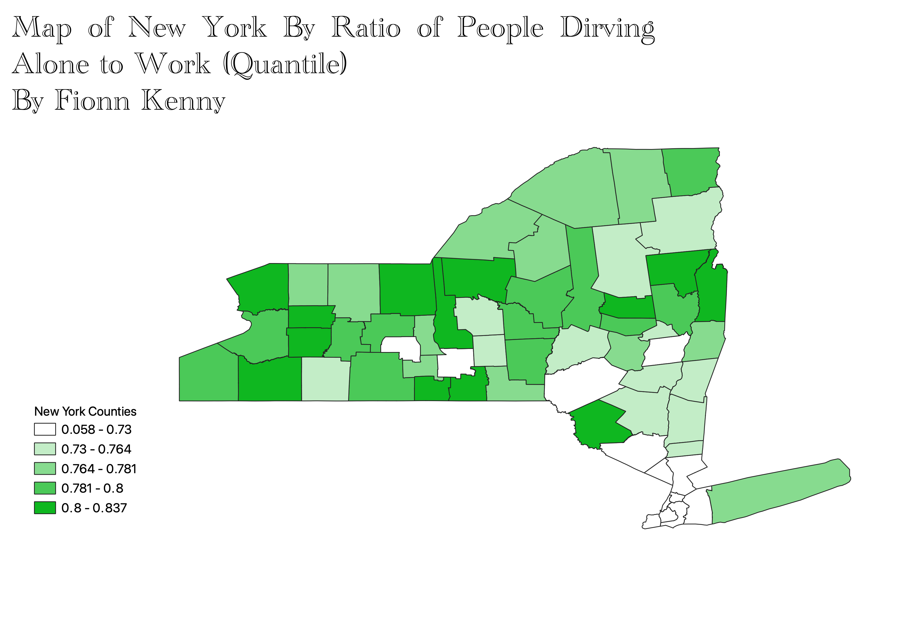
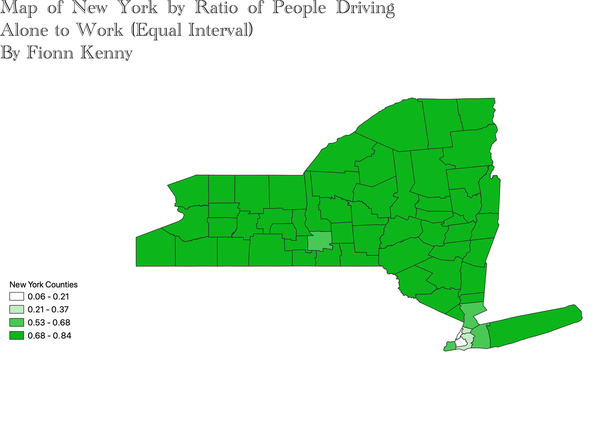
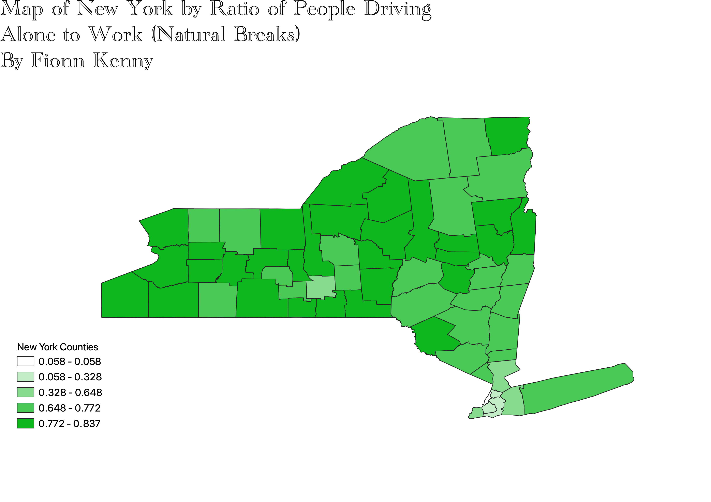

Homework 6 Pt 2: Census data ratios and categories
Fionn Kenny
These maps show the couties of New York State, valued by the ratio of the number of workers who drive alone to work to the entire working population in each county. The three modes used to categorize the data were Quantile, Equal Interval, and Natural Breaks. Quantile
is a data categorization mode that classified data into equally sized groups, however this does not work well when the data is not evenly distributed. The Equal Interval categorization mode has the benefit of a simple easy to interpret categorization with intervals of equal size.
However this mode struggles with unevenly distributed data or data with outliers, as some groups can have few or no data in them. Natural Breaks uses the breaks in the histogram to create groups that are already naturally close together, which works well for clustered data, but
poorly for more continuous datasets.



Data Used for This Project
Dataset CSV
Link to shapefile